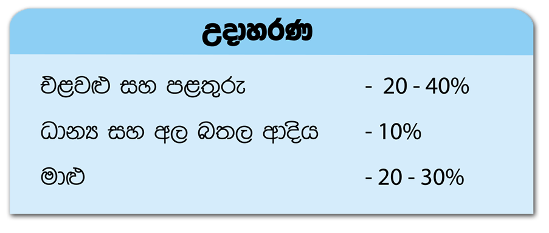

Way of food and nutrient loss
Way of food and nutrient loss
- Food loss due to negligence or wastage- e.g. leftover food in the plate, discarded raw food. Cooked food not used during serving or food thrown away due to improper handling. In large scale catering establishments like hospitals, armed forces, boarding schools etc. food wastage is generally high.
- Post-harvest loss is another type of food loss which occurs when food items are contaminated by insects and rats or when perishable food is spoiled by microbial growth (this can occur in the field or in storage). Such post-harvest food losses are considerable and vary depending on the commodity.
- Invisible loss ofnutrients occur due to processing or cooking. For instance, many changes may take place in proteins, fats, carbohydrates, vitamins and minerals due to heat. Heat or light may diminish nutritive value or even form toxic substances in food.
